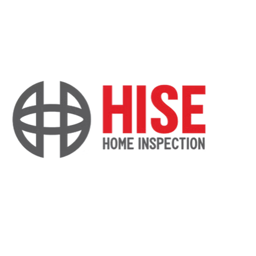

HIArge
Sürüm 1.11 (12)
BIRIZ kayıtlı iPad’e ad hoc kurulum. WhatsApp içinden değil, Safari ile aç.
- Bu sayfayı iPad Safari’de aç.
- Kur’a dokun, Install de.
- Ayarlar → Genel → VPN ve Cihaz Yönetimi → BIRIZ → Güven.
Yalnızca BIRIZ’e kayıtlı cihazlara kurulur: Biriz iPad’i ve listedeki diğer iki cihaz. Farklı Wi-Fi sorun değil; internet yeter.